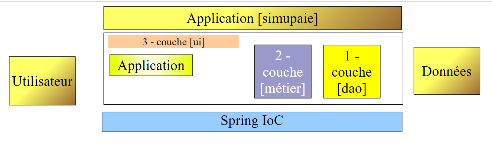
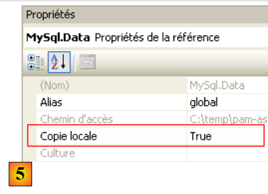
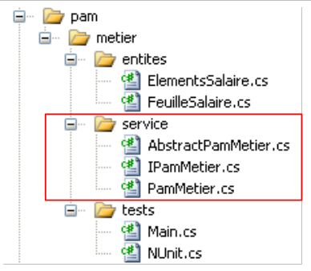
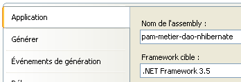
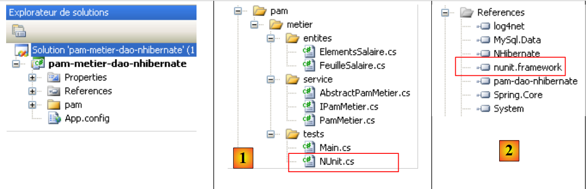
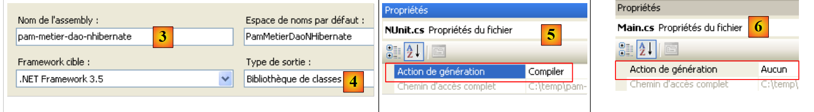
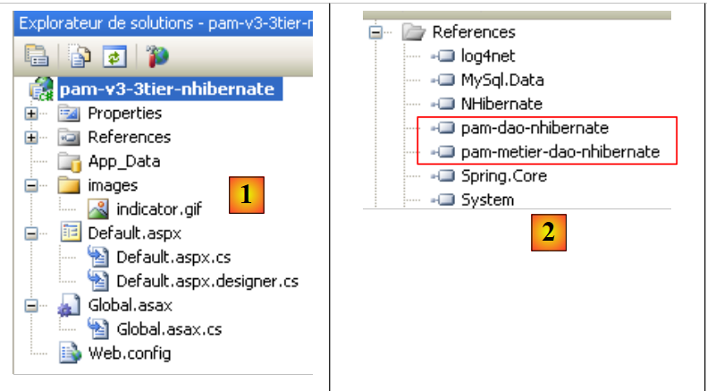

7. La aplicación [SimuPaie] – versión 3 – arquitectura de tres capas con NHibernate
Lectura recomendada: «C# 2008, Capítulo 4: Arquitecturas de tres capas, pruebas NUnit, marco Spring».
7.1. Arquitectura general de la aplicación
La aplicación [SimuPaie] tendrá ahora la siguiente estructura de tres capas:
 |
- La capa [1-dao] (dao = Objeto de Acceso a Datos) se encargará del acceso a los datos.
- La capa [2-business] se encargará de la lógica de negocio de la aplicación, concretamente de los cálculos de nóminas.
- La capa [3-ui] (ui = interfaz de usuario) se encargará de la presentación de los datos al usuario y de la ejecución de las solicitudes del usuario. Nos referimos al conjunto de módulos que realizan esta función como la [Aplicación]. Esta actúa como interfaz de usuario.
- Las tres capas se independizarán mediante el uso de interfaces .NET
- La integración de las diferentes capas se gestionará mediante Spring IoC
El procesamiento de una solicitud del cliente sigue estos pasos:
- El cliente realiza una solicitud a la aplicación.
- La aplicación procesa esta solicitud. Para ello, puede necesitar la ayuda de la capa [de negocio], que a su vez puede necesitar la capa [DAO] si es necesario intercambiar datos con la base de datos.
- La aplicación recibe una respuesta de la capa [de negocio]. Basándose en esta respuesta, envía la vista adecuada (= la respuesta) al cliente.
Tomemos como ejemplo el cálculo del salario de una cuidadora infantil. Esto requerirá varios pasos:
 |
- La capa [UI] deberá solicitar al usuario
- la identidad de la persona cuya nómina se va a calcular
- el número de días trabajados por esa persona
- el número de horas trabajadas
- Para ello, deberá presentar al usuario una lista de personas (apellidos, nombre, NIF) de la tabla [EMPLOYEES] para que el usuario pueda seleccionar a una de ellas. La capa [ui] utilizará la ruta [2, 3, 4, 5, 6, 7] para recuperar esta información. La operación [2] es la solicitud de la lista de empleados; la operación [7] es la respuesta a dicha solicitud. Una vez hecho esto, la capa [ui] puede presentar la lista de empleados al usuario a través de [8].
- El usuario enviará a la capa [ui] el número de días trabajados y el número de horas trabajadas. Esta es la operación [1] anterior. Durante este paso, el usuario interactúa únicamente con la capa [ui]. Es esta capa la que verificará la validez de los datos introducidos. Una vez hecho esto, el usuario solicitará el cálculo de la nómina.
- La capa [ui] pedirá a la capa de negocio que realice este cálculo. Para ello, enviará los datos que ha recibido del usuario a la capa de negocio. Esta es la operación [2].
- La capa [business] necesita cierta información para realizar su tarea:
- información más completa sobre la persona (dirección, índice, etc.)
- las prestaciones vinculadas a su categoría salarial
- los tipos de las distintas cotizaciones a la seguridad social que deben deducirse del salario bruto
Solicitará esta información a la capa [DAO] utilizando la ruta [3, 4, 5, 6]. [3] es la solicitud inicial y [6] es la respuesta a dicha solicitud.
- Una vez que dispone de todos los datos necesarios, la capa [business] calcula la remuneración de la persona seleccionada por el usuario.
- La capa [business] puede ahora responder a la solicitud de la capa [ui] realizada en (d). Esta es la ruta [7].
- La capa [ui] formateará estos resultados para presentarlos al usuario de forma adecuada y, a continuación, los mostrará. Esta es la ruta [8].
- Es fácil imaginar que estos resultados deben almacenarse en un archivo o en una base de datos. Esto puede hacerse automáticamente. En este caso, tras la operación (f), la capa [de negocio] pedirá a la capa [DAO] que guarde los resultados. Esta será la ruta [3, 4, 5, 6]. Esto también puede hacerse a petición del usuario. La ruta [1-8] será utilizada por el ciclo de solicitud-respuesta.
Como se ve en esta descripción, una capa utiliza los recursos de la capa situada a su derecha, nunca los de la capa situada a su izquierda.
Nuestra primera implementación de esta arquitectura de tres capas será una aplicación ASP.NET en la que
- las capas [DAO] y [business] serán implementadas por DLL
- y la capa [ui] se implementará mediante el formulario web de la versión 1 (véase la sección 4.2.1).
Comenzamos implementando la capa [DAO] utilizando el marco NHibernate.
7.2. La capa de acceso a datos [DAO]
 |
7.2.1. El proyecto de Visual Studio C# para la capa [DAO]
El proyecto de Visual Studio para la capa [DAO] es el siguiente:
 |
- en [1], el proyecto en su conjunto
- en [2], las distintas clases del proyecto
- en [3], las referencias del proyecto.
- en [4], una carpeta [lib] que contiene las DLL necesarias para los distintos proyectos que siguen
En las referencias del proyecto [3] se encuentran los siguientes archivos DLL:
- NHibernate: para el ORM de NHibernate
- MySql.Data: el controlador ADO.NET para el SGBD MySQL
- Spring.Core: para el marco Spring
- log4net: una biblioteca de registro
- nunit.framework: una biblioteca de pruebas unitarias
Estas referencias se han extraído de la carpeta [lib] [4]. Asegúrate de que la propiedad «Copia local» de todas estas referencias esté establecida en «True» [5]:
 |
7.2.2. Entidades en la capa [dao]
 |
Las entidades (objetos) necesarias para la capa [dao] se han reunido en la carpeta [entities] del proyecto. Algunas ya nos resultan familiares: [Contributions], descrita en la sección 6.3.2.1; [Employee], descrita en la sección 6.3.2.3; y [Allowances], descrita en la sección 6.3.2.2. Todas ellas se encuentran en el espacio de nombres [Pam.Dao.Entities].
La clase [Employee] se define de la siguiente manera:
namespace Pam.Dao.Entites {
public class Employe {
// automatic properties
public virtual int Id { get; set; }
public virtual int Version { get; set; }
public virtual string SS { get; set; }
public virtual string Nom { get; set; }
public virtual string Prenom { get; set; }
public virtual string Adresse { get; set; }
public virtual string Ville { get; set; }
public virtual string CodePostal { get; set; }
public virtual Indemnites Indemnites { get; set; }
// manufacturers
public Employe() {
}
// ToString
public override string ToString() {
return string.Format("[{0},{1},{2},{3},{4},{5},{6}]", SS, Nom, Prenom, Adresse, Ville, CodePostal, Indemnites);
}
}
}
7.2.3. La clase [PamException]
La capa [dao] se encarga de intercambiar datos con una fuente externa. Este intercambio puede fallar. Por ejemplo, si se solicita información a un servicio remoto en Internet, la recuperación fallará debido a cualquier interrupción de la red. Para este tipo de error, es práctica habitual en Java lanzar una excepción. Si la excepción no es de tipo [RunTimeException] o un tipo derivado, debe indicar en la firma del método que este lanza una excepción. En .NET, todas las excepciones son no controladas, es decir, equivalentes al tipo [RunTimeException] de Java. Por lo tanto, no es necesario declarar que los métodos [GetAllEmployeeIDs, GetEmployee, GetContributions] pueden lanzar una excepción.
Sin embargo, resulta útil poder distinguir entre diferentes excepciones, ya que su gestión puede variar. Así, el código que gestiona diversos tipos de excepciones se puede escribir de la siguiente manera:
try{
... code pouvant générer divers types d'exceptions
}catch (Exception1 ex1){
...on gère un type d'exceptions
}catch (Exception2 ex2){
...on gère un autre type d'exceptions
}finally{
...
}
Por lo tanto, creamos un tipo de excepción para la capa [DAO] de nuestra aplicación. Se trata del siguiente tipo [PamException]:
using System;
namespace Pam.Dao.Entites {
public class PamException : Exception {
// the error code
public int Code { get; set; }
// manufacturers
public PamException() {
}
public PamException(int Code)
: base() {
this.Code = Code;
}
public PamException(string message, int Code)
: base(message) {
this.Code = Code;
}
public PamException(string message, Exception ex, int Code)
: base(message, ex) {
this.Code = Code;
}
}
}
- línea 2: la clase pertenece al espacio de nombres [Pam.Dao.Entities]
- línea 4: la clase deriva de la clase [Exception]
- línea 7: tiene una propiedad pública [Code] que es un código de error
- En nuestra capa [dao], utilizaremos dos tipos de constructores:
- el de las líneas 18-21, que se puede utilizar como se muestra a continuación:
- (continuación)
- o el de las líneas 23-26, diseñado para propagar una excepción que ya se ha producido envolviéndola en una excepción [PamException]:
try{
....
}catch (IOException ex){
// on encapsule l'exception
throw new PamException("Problème d'accès aux données",ex,10);
}
Este segundo método tiene la ventaja de no perder la información contenida en la primera excepción.
7.2.4. Archivos de mapeo de NHibernate <--> clases
Volvamos a la arquitectura de la aplicación:
 |
Al leer, el marco NHibernate recupera datos de la base de datos y los transforma en objetos, cuyas clases acabamos de presentar. Al escribir, hace lo contrario: partiendo de los objetos, crea, actualiza y elimina filas en las tablas de la base de datos. Ya se han presentado los archivos responsables de la transformación de tabla <--> clase:
|
- El archivo [Cotisations.hbm.xml] presentado en la sección 6.3.2.1 mapea la tabla [COTISATIONS] a la clase [Cotisations]
<?xml version="1.0" encoding="utf-8" ?>
<hibernate-mapping xmlns="urn:nhibernate-mapping-2.2"
namespace="Pam.Dao.Entites" assembly="pam-dao-nhibernate">
<class name="Cotisations" table="COTISATIONS">
<id name="Id" column="ID">
<generator class="native" />
</id>
<version name="Version" column="VERSION"/>
<property name="CsgRds" column="CSGRDS" not-null="true"/>
<property name="Csgd" column="CSGD" not-null="true"/>
<property name="Retraite" column="RETRAITE" not-null="true"/>
<property name="Secu" column="SECU" not-null="true"/>
</class>
</hibernate-mapping>
- El archivo [Employe.hbm.xml] presentado en la sección 6.3.2.3 asigna la tabla [EMPLOYEES] a la clase [Employee]
<?xml version="1.0" encoding="utf-8" ?>
<hibernate-mapping xmlns="urn:nhibernate-mapping-2.2"
namespace="Pam.Dao.Entites" assembly="pam-dao-nhibernate">
<class name="Employe" table="EMPLOYES">
<id name="Id" column="ID">
<generator class="native" />
</id>
<version name="Version" column="VERSION"/>
<property name="SS" column="SS" length="15" not-null="true" unique="true"/>
<property name="Nom" column="NOM" length="30" not-null="true"/>
<property name="Prenom" column="PRENOM" length="20" not-null="true"/>
<property name="Adresse" column="ADRESSE" length="50" not-null="true" />
<property name="Ville" column="VILLE" length="30" not-null="true"/>
<property name="CodePostal" column="CP" length="5" not-null="true"/>
<many-to-one name="Indemnites" column="INDEMNITE_ID" cascade="save-update" lazy="false"/>
</class>
</hibernate-mapping>
- El archivo [Indemnites.hbm.xml] presentado en la sección 6.3.2.2 asigna la tabla [INDEMNITES] a la clase [Indemnites]
<?xml version="1.0" encoding="utf-8" ?>
<hibernate-mapping xmlns="urn:nhibernate-mapping-2.2"
namespace="Pam.Dao.Entites" assembly="pam-dao-nhibernate">
<class name="Indemnites" table="INDEMNITES">
<id name="Id" column="ID">
<generator class="native" />
</id>
<version name="Version" column="VERSION"/>
<property name="Indice" column="INDICE" not-null="true" unique="true"/>
<property name="BaseHeure" column="BASE_HEURE" not-null="true"/>
<property name="EntretienJour" column="ENTRETIEN_JOUR" not-null="true"/>
<property name="RepasJour" column="REPAS_JOUR" not-null="true" />
<property name="IndemnitesCp" column="INDEMNITES_CP" not-null="true"/>
</class>
</hibernate-mapping>
Obsérvese que en la etiqueta <hibernate-mapping> de estos archivos (línea 2) están presentes los siguientes atributos:
- namespace: Pam.Dao.Entities. Las clases [Contributions], [Employee] y [Allowances] deben estar ubicadas en este espacio de nombres.
- assembly: pam-dao-nhibernate. Los archivos de mapeo [*.hbm.xml] deben estar encapsulados en una DLL denominada [pam-dao-nhibernate]. Para ello, el proyecto C# se configura de la siguiente manera:
 |
- en [1], el ensamblado del proyecto se denomina [pam-dao-nhibernate]
- en [2], los archivos de mapeo [*.hbm.xml] se incluyen [3] en el ensamblado del proyecto
7.2.5. La interfaz [ IPamDao] de la capa [DAO]
Volvamos a la arquitectura de nuestra aplicación:
 |
En casos sencillos, podemos partir de la capa [de negocio] para descubrir las interfaces de la aplicación. Para funcionar, necesita datos:
- que ya están disponibles en archivos, bases de datos o a través de la red. Estos son proporcionados por la capa [dao].
- aún no están disponibles. En ese caso, los proporciona la capa [ui], que los obtiene del usuario de la aplicación.
¿Qué interfaz debe proporcionar la capa [DAO] a la capa [business]? ¿Qué interacciones son posibles entre estas dos capas? La capa [DAO] debe proporcionar los siguientes datos a la capa [business]:
- la lista de proveedores de servicios de guardería para que el usuario pueda seleccionar uno específico
- información completa sobre la persona seleccionada (dirección, índice, etc.)
- las prestaciones asociadas al índice de la persona
- las tarifas de las distintas cotizaciones a la seguridad social
Esta información se conoce antes del cálculo de la nómina y, por lo tanto, puede almacenarse. En la dirección [negocio] -> [DAO], la capa [negocio] puede solicitar a la capa [DAO] que registre el resultado del cálculo de la nómina. No lo haremos aquí.
Con esta información, podríamos intentar una definición inicial de la interfaz de la capa [dao]:
using Pam.Dao.Entites;
namespace Pam.Dao.Service {
public interface IPamDao {
// list of all employee identities
Employe[] GetAllIdentitesEmployes();
// an individual employee with benefits
Employe GetEmploye(string ss);
// list of all contributions
Cotisations GetCotisations();
}
}
- Línea 1: Importamos el espacio de nombres para las entidades de la capa [dao].
- Línea 3: La capa [dao] se encuentra en el espacio de nombres [Pam.Dao.Service]. Los elementos del espacio de nombres [Pam.Dao.Entities] pueden crearse en múltiples instancias. Los elementos del espacio de nombres [Pam.Dao.Service] se crean como una única instancia (singleton). Esto es lo que justificó la elección de los nombres de los espacios de nombres.
- Línea 4: La interfaz se denomina [IPamDao]. Define tres métodos:
- Línea 6: [GetAllIdentitesEmployes] devuelve una matriz de objetos de tipo [Employe] que representa la lista de proveedores de cuidado infantil en un formato simplificado (apellido, nombre, SS).
- Línea 8: [GetEmploye] devuelve un objeto [Employe]: el empleado con el número de la Seguridad Social pasado como parámetro al método, junto con las prestaciones asociadas a su categoría salarial.
- Línea 10: [GetCotisations] devuelve el objeto [Cotisations], que encapsula los tipos de las distintas cotizaciones a la seguridad social que se deducirán del salario bruto.
7.3. Implementación y pruebas de la capa [dao]
7.3.1. El proyecto de Visual Studio
El proyecto de Visual Studio ya se ha presentado. A modo de recordatorio:
 |
- en [1], el proyecto en su conjunto
- en [2], las distintas clases del proyecto. La carpeta [entities] contiene las entidades gestionadas por la capa [dao], así como los archivos de mapeo de NHibernate. La carpeta [service] contiene la interfaz [IPamDao] y su implementación [PamDaoNHibernate]. La carpeta [tests] contiene una prueba de consola [Main.cs] y una prueba unitaria [NUnit.cs].
- en [3], las referencias del proyecto.
7.3.2. El programa de prueba de consola [Main.cs]
El programa de prueba [Main.cs] se ejecuta en la siguiente arquitectura:
 |
Se encarga de probar los métodos de la interfaz [IPamDao]. Un ejemplo básico podría ser el siguiente:
using System;
using Pam.Dao.Entites;
using Pam.Dao.Service;
using Spring.Context.Support;
namespace Pam.Dao.Tests {
public class MainPamDaoTests {
public static void Main() {
try {
// layer instantiation [dao]
IPamDao pamDao = (IPamDao)ContextRegistry.GetContext().GetObject("pamdao");
// list of employee identities
foreach (Employe Employe in pamDao.GetAllIdentitesEmployes()) {
Console.WriteLine(Employe.ToString());
}
// an employee with benefits
Console.WriteLine("------------------------------------");
Console.WriteLine(pamDao.GetEmploye("254104940426058"));
Console.WriteLine("------------------------------------");
// list of contributions
Cotisations cotisations = pamDao.GetCotisations();
Console.WriteLine(cotisations.ToString());
} catch (Exception ex) {
// exception display
Console.WriteLine(ex.ToString());
}
//break
Console.ReadLine();
}
}
}
- Línea 11: Solicitamos a Spring una referencia a la capa [dao].
- líneas 13–15: probamos el método [GetAllEmployeeIDs] de la interfaz [IPamDao]
- Línea 18: probamos el método [GetEmployee] de la interfaz [IPamDao]
- línea 21: probamos el método [GetCotisations] de la interfaz [IPamDao]
Spring, NHibernate y log4net se configuran mediante el siguiente archivo [ App.config]:
<?xml version="1.0" encoding="utf-8" ?>
<configuration>
<!-- configuration sections -->
<configSections>
<section name="log4net" type="log4net.Config.Log4NetConfigurationSectionHandler,log4net" />
<sectionGroup name="spring">
<section name="objects" type="Spring.Context.Support.DefaultSectionHandler, Spring.Core" />
<section name="context" type="Spring.Context.Support.ContextHandler, Spring.Core" />
</sectionGroup>
<section name="hibernate-configuration" type="NHibernate.Cfg.ConfigurationSectionHandler, NHibernate" />
</configSections>
<!-- spring configuration -->
<spring>
<context>
<resource uri="config://spring/objects" />
</context>
<objects xmlns="http://www.springframework.net">
<object id="pamdao" type="Pam.Dao.Service.PamDaoNHibernate, pam-dao-nhibernate" init-method="init" destroy-method="destroy"/>
</objects>
</spring>
<!-- configuration NHibernate -->
<hibernate-configuration xmlns="urn:nhibernate-configuration-2.2">
<session-factory>
<property name="connection.provider">NHibernate.Connection.DriverConnectionProvider</property>
<property name="connection.driver_class">NHibernate.Driver.MySqlDataDriver</property>
<property name="dialect">NHibernate.Dialect.MySQLDialect</property>
<property name="connection.connection_string">
Server=localhost;Database=dbpam_nhibernate;Uid=root;Pwd=;
</property>
<property name="show_sql">false</property>
<mapping assembly="pam-dao-nhibernate"/>
</session-factory>
</hibernate-configuration>
<!-- This section contains the log4net configuration settings -->
<!-- NOTE IMPORTANTE: logs are not active by default. They must be activated by program
avec l'instruction log4net.Config.XmlConfigurator.Configure();
! -->
<log4net>
...
</log4net>
</configuration>
La configuración de NHibernate (línea 10, líneas 25–36) se explicó en la sección 6.3.1. Obsérvese la línea 34, que especifica que los archivos de mapeo se encuentran en el ensamblado [pam-dao-nhibernate]. Este es el ensamblado del proyecto.
La configuración de Spring se define en las líneas 6–9 y 15–22. La línea 20 define el objeto [pamdao] utilizado por el programa de consola [Main.cs]. La etiqueta <object> tiene aquí los siguientes atributos:
- type: Especifica la clase que se va a instanciar. Se trata de la clase [PamDaoNHibernate], que implementa la interfaz [IPamDao]. Se encuentra en el archivo DLL [pam-dao-nhibernate] del proyecto.
- init-method: el método de la clase [PamDaoNHibernate] que se ejecutará después de que se haya instanciado la clase
- destroy-method: el método de la clase [PamDaoNHibernate] que se ejecutará cuando se destruya el contenedor Spring al final de la ejecución del proyecto.
La ejecución utilizando la base de datos descrita en la sección 6.2 produce la siguiente salida de consola:
- líneas 1-2: los 2 empleados de tipo [Employee] con solo la información [SS, Apellido, Nombre]
- línea 4: el empleado de tipo [Employee] con número de la Seguridad Social [254104940426058]
- fila 5: tasas de cotización
7.3.3. Definición de la clase [PamDaoNHibernate]
 |
La interfaz [IPamDao] implementada por la capa [dao] es la siguiente:
using Pam.Dao.Entites;
namespace Pam.Dao.Service {
public interface IPamDao {
// list of all employee identities
Employe[] GetAllIdentitesEmployes();
// an individual employee with benefits
Employe GetEmploye(string ss);
// list of all contributions
Cotisations GetCotisations();
}
}
Pregunta: Escribe el código para la clase [PamDaoNHibernate] que implemente la interfaz [IPamDao] anterior utilizando el marco NHibernate configurado como se ha descrito anteriormente. También implementaremos los métodos init y destroy ejecutados por Spring. El método init creará la SessionFactory de la que obtendremos objetos Session. El método destroy cerrará esta SessionFactory. Utilizaremos los ejemplos de la sección 6.5.
Restricciones:
Supondremos que ciertos datos solicitados a la capa [dao] caben íntegramente en la memoria. Por lo tanto, para mejorar el rendimiento, la clase [PamDaoNHibernate] almacenará:
- la tabla [EMPLOYEES] en el formato (SS, LAST_NAME, FIRST_NAME) requerido por el método [GetAllEmployeeIDs], como una matriz de objetos [Employee]
- la tabla [COTISATIONS] en forma de un único objeto de tipo [Cotisations]
Esto se llevará a cabo en el método [init] de la clase. El esqueleto de la clase [PamDaoNHibernate] podría ser el siguiente:
using System;
...
namespace Pam.Dao.Service {
class PamDaoNHibernate : IPamDao {
// private fields
private Cotisations cotisations;
private Employe[] employes;
private ISessionFactory sessionFactory = null;
// init
public void init() {
try {
// factory initialization
sessionFactory = new Configuration().Configure().BuildSessionFactory();
// retrieve contribution rates and employees for caching
.......................
}
// closure SessionFactory
public void destroy() {
if (sessionFactory != null) {
sessionFactory.Close();
}
}
// list of all employee identities
public Employe[] GetAllIdentitesEmployes() {
return employes;
}
// an individual employee with benefits
public Employe GetEmploye(string ss) {
................................
}
// list of contributions
public Cotisations GetCotisations() {
return cotisations;
}
}
}
7.3.4. Pruebas unitarias con NUnit
Lectura recomendada: «C# 2008, capítulo 4: Arquitecturas de tres capas, pruebas con NUnit, marco Spring».
La prueba anterior era visual: comprobábamos en la pantalla que obteníamos los resultados esperados. Este método es insuficiente en un entorno profesional. Las pruebas siempre deben automatizarse en la medida de lo posible y tener como objetivo no requerir intervención humana. Los seres humanos son propensos a la fatiga y su capacidad para verificar las pruebas disminuye a lo largo del día. La herramienta [NUnit] ayuda a lograr esta automatización. Está disponible en la URL [http://www.nunit.org/].
El proyecto de Visual Studio para la capa [dao] evolucionará de la siguiente manera:
 |
- en [1], el programa de prueba [NUnit.cs]
- en [2,3], el proyecto generará una DLL llamada [pam-dao-hibernate.dll]
- en [4], la referencia a la DLL del marco de trabajo de NUnit: [nunit.framework.dll]
- en [5], la clase [Main.cs] no se incluirá en la DLL [pam-dao-hibernate]
- En [6], la clase [NUnit.cs] se incluirá en la DLL [pam-dao-hibernate]
La clase de prueba de NUnit <a id="pam-dao-nhibernate-nunit"></a> es la siguiente:
using System.Collections;
using NUnit.Framework;
using Pam.Dao.Service;
using Pam.Dao.Entites;
using Spring.Objects.Factory.Xml;
using Spring.Core.IO;
using Spring.Context.Support;
namespace Pam.Dao.Tests {
[TestFixture]
public class NunitPamDao : AssertionHelper {
// the [dao] layer to be tested
private IPamDao pamDao = null;
// manufacturer
public NunitPamDao() {
// layer instantiation [dao]
pamDao = (IPamDao)ContextRegistry.GetContext().GetObject("pamdao");
}
// init
[SetUp]
public void Init() {
}
[Test]
public void GetAllIdentitesEmployes() {
// audit no. of employees
Expect(2, EqualTo(pamDao.GetAllIdentitesEmployes().Length));
}
[Test]
public void GetCotisations() {
// checking contribution rates
Cotisations cotisations = pamDao.GetCotisations();
Expect(3.49, EqualTo(cotisations.CsgRds).Within(1E-06));
Expect(6.15, EqualTo(cotisations.Csgd).Within(1E-06));
Expect(9.39, EqualTo(cotisations.Secu).Within(1E-06));
Expect(7.88, EqualTo(cotisations.Retraite).Within(1E-06));
}
[Test]
public void GetEmployeIdemnites() {
// individual verification
Employe employe1 = pamDao.GetEmploye("254104940426058");
Employe employe2 = pamDao.GetEmploye("260124402111742");
Expect("Jouveinal", EqualTo(employe1.Nom));
Expect(2.1, EqualTo(employe1.Indemnites.BaseHeure).Within(1E-06));
Expect("Laverti", EqualTo(employe2.Nom));
Expect(1.93, EqualTo(employe2.Indemnites.BaseHeure).Within(1E-06));
}
[Test]
public void GetEmployeIdemnites2() {
// non-existent individual verification
bool erreur = false;
try {
Employe employe1 = pamDao.GetEmploye("xx");
} catch {
erreur = true;
}
Expect(erreur, True);
}
}
}
- línea 11: la clase tiene el atributo [TestFixture], lo que la convierte en una clase de prueba [NUnit].
- línea 12: la clase deriva de la clase de utilidades AssertionHelper del marco NUnit (a partir de la versión 2.4.6).
- línea 14: el campo privado [pamDao] es una instancia de la interfaz que proporciona acceso a la capa [dao]. Tenga en cuenta que el tipo de este campo es una interfaz, no una clase. Esto significa que la instancia [pamDao] solo hace accesibles los métodos, concretamente los de la interfaz [IPamDao].
- Los métodos probados en la clase son aquellos con el atributo [Test]. Para todos estos métodos, el proceso de prueba es el siguiente:
- Primero se ejecuta el método con el atributo [SetUp]. Se utiliza para preparar los recursos (conexiones de red, conexiones a bases de datos, etc.) necesarios para la prueba.
- A continuación, se ejecuta el método que se va a probar
- y, por último, se ejecuta el método con el atributo [TearDown]. Por lo general, se utiliza para liberar los recursos asignados por el método con el atributo [SetUp].
- En nuestra prueba, no hay recursos que asignar antes de cada prueba y luego desasignar después. Por lo tanto, no necesitamos métodos con los atributos [SetUp] y [TearDown]. A modo de ejemplo, hemos incluido, en las líneas 23–26, un método con el atributo [SetUp].
- Líneas 17-20: El constructor de la clase inicializa el campo privado [pamDao] utilizando Spring y [App.config].
- Líneas 29-32: Prueba del método [GetAllIdentitesEmployes]
- Líneas 35-42: Prueba del método [GetCotisations]
- Líneas 45–53: Prueba del método [GetEmploye]
- Líneas 56–65: Prueba del método [GetEmploye] cuando se produce una excepción.
La compilación del proyecto crea el archivo DLL [pam-dao-nhibernate.dll] en la carpeta [bin/Release].
 |
La carpeta [bin/Release] también contiene:
- las DLL que forman parte de las referencias del proyecto y tienen el atributo [Copia local] establecido en verdadero: [Spring.Core, MySql.data, NHibernate, log4net]. Estas DLL van acompañadas de copias de las DLL que ellas mismas utilizan:
- [CastleDynamicProxy, Iesi.Collections] para la herramienta NHibernate
- [antlr.runtime, Common.Logging] para la herramienta Spring
- El archivo [pam-dao-nhibernate.dll.config] es una copia del archivo de configuración [App.config]. VS realiza esta duplicación. En tiempo de ejecución, se utiliza el archivo [pam-dao-nhibernate.dll.config], no [App.config].
Cargamos la DLL [pam-dao-nhibernate.dll] utilizando la herramienta [NUnit-Gui], versión 2.4.6, y ejecutamos las pruebas:

En el ejemplo anterior, las pruebas se han realizado correctamente.
Ejercicio práctico:
Implementa las pruebas para la clase [PamDaoNHibernate] en un equipo.- Utilice diferentes archivos de configuración [App.config] para utilizar diferentes sistemas de gestión de bases de datos (Firebird, MySQL, Postgres, SQL Server)
7.3.5. Generación de la DLL de la capa [ ] y [dao]
Una vez que se haya escrito y probado la clase [PamDaoNHibernate], se generará la DLL de la capa [dao] de la siguiente manera:
 |
- [1], los programas de prueba se excluyen del ensamblado del proyecto
- [2,3], configuración del proyecto
- [4], compilación del proyecto
- La DLL se genera en la carpeta [bin/Release] [5]. La añadimos a las DLL que ya se encuentran en la carpeta [lib] [6]:
 |
7.4. La capa de negocio
Repasemos la arquitectura general de la aplicación [SimuPaie]:
 |
Suponemos ahora que la capa [dao] está completa y se ha encapsulado en el archivo DLL [pam-dao-nhibernate.dll]. Nos centraremos ahora en la capa [business]. Esta capa implementa las reglas de negocio, en este caso las reglas para calcular un salario.
7.4.1. El proyecto de Visual Studio [ ] para la capa [business]
El proyecto de Visual Studio para la capa de negocio podría tener el siguiente aspecto:
 |
- En [1], todo el proyecto se configura mediante el archivo [App.config]
- en [2], la capa [business] consta de dos carpetas [entities, service]. La carpeta [tests] contiene un programa de prueba de consola (Main.cs) y un programa de prueba NUnit (NUnit.cs).
- En [3] se muestran las referencias utilizadas por el proyecto. Obsérvese el archivo DLL [pam-dao-hibernate] de la capa [DAO] mencionada anteriormente.
7.4.2. La interfaz [IPamM tier] de la capa [business]
Volvamos a la arquitectura general de la aplicación:
 |
¿Qué interfaz debería proporcionar la capa [de negocio] a la capa [UI]? ¿Cuáles son las posibles interacciones entre estas dos capas? Recordemos la interfaz web que se presentará al usuario:
 |
- Cuando se muestre el formulario por primera vez, la lista de empleados debería aparecer en [1]. Basta con una lista simplificada (apellidos, nombre, número de la Seguridad Social). El número de la Seguridad Social es necesario para acceder a información adicional sobre el empleado seleccionado (información de la 6 a la 11).
- La información del 12 al 15 corresponde a las distintas tasas de cotización.
- La información del 16 al 19 son las prestaciones vinculadas al índice del empleado
- La información del 20 al 24 consiste en componentes salariales calculados en función de los datos introducidos por el usuario del 1 al 3.
La interfaz [IPamMetier] proporcionada a la capa [ui] por la capa [metier] debe cumplir los requisitos anteriores. Existen muchas interfaces posibles. Proponemos la siguiente:
using Pam.Dao.Entites;
using Pam.Metier.Entites;
namespace Pam.Metier.Service {
public interface IPamMetier {
// list of all employee identities
Employe[] GetAllIdentitesEmployes();
// ------- salary calculation
FeuilleSalaire GetSalaire(string ss, double heuresTravaillées, int joursTravaillés);
}
}
- línea 7: el método que rellenará el cuadro combinado [1]
- línea 10: el método que recuperará la información del 6 al 24. Esta información se ha recopilado en un objeto de tipo [PayrollSheet].
7.4.3. Entidades en la capa [business]
La carpeta [entities] del proyecto de Visual Studio contiene los objetos gestionados por la clase de negocio: [Payroll] y [PayrollItems].
 |
La clase [FeuilleS al] encapsula los campos del 6 al 24 del formulario anterior:
using Pam.Dao.Entites;
namespace Pam.Metier.Entites {
public class FeuilleSalaire {
// automatic properties
public Employe Employe { get; set; }
public Cotisations Cotisations { get; set; }
public ElementsSalaire ElementsSalaire { get; set; }
// ToString
public override string ToString() {
return string.Format("[{0},{1},{2}", Employe, Cotisations, ElementsSalaire);
}
}
}
- Línea 8: Información de la 6 a la 11 sobre el empleado cuyo salario se está calculando, e información de la 16 a la 19 sobre sus complementos. Tenga en cuenta que un objeto [Employee] encapsula un objeto [Allowances] que representa los complementos del empleado.
- línea 9: información de la 12 a la 15
- línea 10: información de la 20 a la 24
- Líneas 13-15: el método [ToString]
La clase [Elements Salaire] encapsula la información de los campos 20 a 24 del formulario:
namespace Pam.Metier.Entites {
public class ElementsSalaire {
// automatic properties
public double SalaireBase { get; set; }
public double CotisationsSociales { get; set; }
public double IndemnitesEntretien { get; set; }
public double IndemnitesRepas { get; set; }
public double SalaireNet { get; set; }
// ToString
public override string ToString() {
return string.Format("[{0} : {1} : {2} : {3} : {4} ]", SalaireBase, CotisationsSociales, IndemnitesEntretien, IndemnitesRepas, SalaireNet);
}
}
}
- líneas 4-8: los componentes salariales tal y como se explican en las reglas de negocio descritas en la sección 3.2.
- línea 4: el salario base del empleado, basado en el número de horas trabajadas
- línea 5: las cotizaciones deducidas de este salario base
- líneas 6 y 7: complementos que se suman al salario base, en función del grado del empleado y del número de días trabajados
- línea 8: el salario neto que se debe pagar
- Líneas 12-15: El método [ToString] de la clase.
7.4.4. Implementación de la capa [business]
 |
Implementaremos la interfaz [IPamMetier] con dos clases:
- [AbstractBasePamMetier], que es una clase abstracta en la que implementaremos el acceso a datos para la interfaz [IPamMetier]. Esta clase tendrá una referencia a la capa [dao].
- [PamMetier], una clase derivada de [AbstractBasePamMetier], que implementará las reglas de negocio de la interfaz [IPamMetier]. No tendrá conocimiento de la capa [dao].
La clase [AbstractBasePamMetier] tendrá el siguiente aspecto:
using Pam.Dao.Entites;
using Pam.Dao.Service;
using Pam.Metier.Entites;
namespace Pam.Metier.Service {
public abstract class AbstractBasePamMetier : IPamMetier {
// data access object
public IPamDao PamDao { get; set; }
// list of all employee identities
public Employe[] GetAllIdentitesEmployes() {
return PamDao.GetAllIdentitesEmployes();
}
// an individual employee with benefits
protected Employe GetEmploye(string ss) {
return PamDao.GetEmploye(ss);
}
// contributions
protected Cotisations GetCotisations() {
return PamDao.GetCotisations();
}
// salary calculation
public abstract FeuilleSalaire GetSalaire(string ss, double heuresTravaillées, int joursTravaillés);
}
}
- Línea 5: La clase pertenece al espacio de nombres [Pam.Metier.Service], al igual que todas las clases e interfaces de la capa [business].
- línea 6: la clase es abstracta (atributo abstract) e implementa la interfaz [IPamMetier]
- Línea 9: la clase contiene una referencia a la capa [dao] en forma de una propiedad pública
- líneas 12-14: implementación del método [GetAllEmployeIDs] de la interfaz [IPamMetier]; utiliza el método del mismo nombre de la capa [dao]
- líneas 17–19: método interno (protegido) [GetEmployee] que llama al método del mismo nombre en la capa [dao] – declarado como protegido para que las clases derivadas puedan acceder a él sin que sea público
- líneas 22-24: método interno (protegido) [GetContributions] que llama al método del mismo nombre en la capa [dao]
- línea 27: implementación abstracta (atributo abstract) del método [GetSalary] de la interfaz [IPamMetier].
El cálculo del salario se implementa mediante la siguiente clase [PamMetier]:
using System;
using Pam.Dao.Entites;
using Pam.Metier.Entites;
namespace Pam.Metier.Service {
public class PamMetier : AbstractBasePamMetier {
// wage calculation
public override FeuilleSalaire GetSalaire(string ss, double heuresTravaillées, int joursTravaillés) {
// SS : employee's SS number
// HeuresTravaillées: number of hours worked
// Days worked: number of days worked
// we get the employee back with his benefits
...
// we recover the various contribution rates
...
// salary components are calculated
...
// we return the payslip
return ...;
}
}
}
- línea 7: la clase deriva de [AbstractBasePamMetier] y, por lo tanto, implementa la interfaz [IPamMetier]
- línea 10: el método [GetSalary] que se debe implementar
Pregunta: Escribe el código para el método [GetSalaire].
7.4.5. La prueba de consola para la capa [business]
Repasemos el proyecto de Visual Studio para la capa [business]:
 |
El programa de prueba [Main] anterior comprueba los métodos de la interfaz [IPamMetier]. Un ejemplo básico podría tener este aspecto:
using System;
using Pam.Dao.Entites;
using Pam.Metier.Service;
using Spring.Context.Support;
namespace Pam.Metier.Tests {
class MainPamMetierTests {
public static void Main() {
try {
// instantiation layer [metier]
IPamMetier pamMetier = ContextRegistry.GetContext().GetObject("pammetier") as IPamMetier;
// payslip calculations
Console.WriteLine(pamMetier.GetSalaire("260124402111742", 30, 5));
Console.WriteLine(pamMetier.GetSalaire("254104940426058", 150, 20));
try {
Console.WriteLine(pamMetier.GetSalaire("xx", 150, 20));
} catch (PamException ex) {
Console.WriteLine(string.Format("PamException : {0}", ex.Message));
}
} catch (Exception ex) {
Console.WriteLine(string.Format("Exception : {0}", ex.ToString()));
}
// break
Console.ReadLine();
}
}
}
- Línea 11: Instanciación de Spring de la capa [business].
- Líneas 13-14: prueba del método [GetSalary] de la interfaz [IPamMetier]
- Líneas 15–22: Prueba del método [GetSalaire] cuando se produce una excepción
El programa de prueba utiliza el siguiente archivo de configuración [ App.config]:
<?xml version="1.0" encoding="utf-8" ?>
<configuration>
<!-- configuration sections -->
<configSections>
<section name="log4net" type="log4net.Config.Log4NetConfigurationSectionHandler,log4net" />
<sectionGroup name="spring">
<section name="objects" type="Spring.Context.Support.DefaultSectionHandler, Spring.Core" />
<section name="context" type="Spring.Context.Support.ContextHandler, Spring.Core" />
</sectionGroup>
<section name="hibernate-configuration" type="NHibernate.Cfg.ConfigurationSectionHandler, NHibernate" />
</configSections>
<!-- spring configuration -->
<spring>
<context>
<resource uri="config://spring/objects" />
</context>
<objects xmlns="http://www.springframework.net">
<object id="pamdao" type="Pam.Dao.Service.PamDaoNHibernate, pam-dao-nhibernate" init-method="init" destroy-method="destroy"/>
<object id="pammetier" type="Pam.Metier.Service.PamMetier, pam-metier-dao-nhibernate" >
<property name="PamDao" ref="pamdao"/>
</object>
</objects>
</spring>
<!-- configuration NHibernate -->
<hibernate-configuration xmlns="urn:nhibernate-configuration-2.2">
....
</hibernate-configuration>
<!-- This section contains the log4net configuration settings -->
<!-- NOTE IMPORTANTE: logs are not active by default. They must be activated by program
avec l'instruction log4net.Config.XmlConfigurator.Configure();
! -->
<log4net>
...
</log4net>
</configuration>
Este archivo es idéntico al archivo [App.config] utilizado para el proyecto de la capa [dao] (véase la sección 7.3.2), con las siguientes diferencias menores:
- línea 20: el objeto con el ID «pamdao» es de tipo [Pam.Dao.Service.PamDaoNHibernate] y se encuentra en el ensamblado [pam-dao-nhibernate]. La capa [dao] es la que se ha comentado anteriormente.
- líneas 21-23: el objeto con el ID «pammetier» es de tipo [Pam.Metier.Service.PamMetier] y se encuentra en el ensamblado [pam-metier-dao-nhibernate]. El proyecto debe configurarse de la siguiente manera:
 |
- Línea 22: El objeto [PamMetier] instanciado por Spring tiene una propiedad pública [PamDao] que es una referencia a la capa [dao]. Esta propiedad se inicializa con la referencia a la capa [dao] creada en la línea 20.
La ejecución utilizando la base de datos descrita en la sección 6.2 produce la siguiente salida en la consola:
- Líneas 1-2: Las 2 nóminas solicitadas
- línea 3: la excepción [PamException] provocada por un empleado inexistente.
7.4.6. Pruebas unitarias para la capa de negocio
La prueba anterior fue visual: verificamos en pantalla que efectivamente obteníamos los resultados esperados. Ahora pasaremos a las pruebas NUnit no visuales.
Volvamos al proyecto de Visual Studio para el proyecto [business]:
 |
- en [1], el programa de pruebas NUnit
- en [2], la referencia a la DLL [nunit.framework]
 |
- en [3,4], al compilar el proyecto se generará el archivo DLL [pam-metier-dao-nhibernate.dll].
- en [5], el archivo [NUnit.cs] se incluirá en el ensamblado [pam-metier-dao-nhibernate.dll], pero no [Main.cs] [6]
La clase de prueba de NUnit es la siguiente:
using NUnit.Framework;
using Pam.Dao.Entites;
using Pam.Metier.Entites;
using Pam.Metier.Service;
using Spring.Context.Support;
namespace Pam.Metier.Tests {
[TestFixture()]
public class NunitTestPamMetier : AssertionHelper {
// the [metier] layer to test
private IPamMetier pamMetier;
// manufacturer
public NunitTestPamMetier() {
// layer instantiation [dao]
pamMetier = ContextRegistry.GetContext().GetObject("pammetier") as IPamMetier;
}
[Test]
public void GetAllIdentitesEmployes() {
// audit no. of employees
Expect(2, EqualTo(pamMetier.GetAllIdentitesEmployes().Length));
}
[Test]
public void GetSalaire1() {
// wage sheet calculation
FeuilleSalaire feuilleSalaire = pamMetier.GetSalaire("254104940426058", 150, 20);
// checks
Expect(368.77, EqualTo(feuilleSalaire.ElementsSalaire.SalaireNet).Within(1E-06));
// non-existent employee payslip
bool erreur = false;
try {
feuilleSalaire = pamMetier.GetSalaire("xx", 150, 20);
} catch (PamException) {
erreur = true;
}
Expect(erreur, True);
}
}
}
- línea 13: el campo privado [pamMetier] es una instancia de la interfaz que proporciona acceso a la capa [metier]. Tenga en cuenta que el tipo de este campo es una interfaz, no una clase. Esto significa que la instancia [PamMetier] solo hace accesibles los métodos de la interfaz [IPamMetier].
- líneas 16-19: El constructor de la clase inicializa el campo privado [pamMetier] utilizando Spring y el archivo de configuración [App.config].
- Líneas 23-26: Prueba del método [GetAllIdentitesEmployes]
- Líneas 29-42: Prueba del método [GetSalaire]
El proyecto anterior genera el archivo DLL [pam-metier.dll] en la carpeta [bin/Release].
 |
La carpeta [bin/Release] también contiene:
- las DLL que forman parte de las referencias del proyecto y tienen el atributo [Copia local] establecido en verdadero: [Spring.Core, MySql.data, NHibernate, log4net, pam-dao-nhibernate]. Estas DLL van acompañadas de copias de las DLL que ellas mismas utilizan:
- [CastleDynamicProxy, Iesi.Collections] para la herramienta NHibernate
- [antlr.runtime, Common.Logging] para la herramienta Spring
- El archivo [pam-metier-dao-nhibernate.dll.config] es una copia del archivo de configuración [App.config].
Cargamos la DLL [pam-metier-dao-nhibernate.dll] con la herramienta [NUnit-Gui, versión 2.4.6] y ejecutamos las pruebas:

En el ejemplo anterior, las pruebas se han realizado con éxito.
Ejercicio práctico:
Implementa las pruebas para la clase [PamMetier] en el equipo.- Utilice diferentes archivos de configuración App.config para utilizar distintos sistemas de gestión de bases de datos (Firebird, MySQL, Postgres, SQL Server).
7.4.7. Generación de la DLL de la capa [business]
Una vez que la clase [PamMetier] haya sido escrita y probada, generaremos el archivo DLL [pam-metier-dao-hibernate.dll] para la capa [business] siguiendo el método descrito en la sección 7.3.5. Nos aseguraremos de no incluir los programas de prueba [Main.cs] y [NUnit.cs] en el DLL. A continuación, lo colocaremos en la carpeta [lib] de los DLL [1].
 |
7.5. La capa [web]
Repasemos la arquitectura general de la aplicación [SimuPaie]:
 |
Suponemos que las capas [dao] y [business] están completas y encapsuladas en los archivos DLL [pam-dao-hibernate, pam-business-dao-hibernate.dll]. A continuación, describiremos la capa web.
7.5.1. El proyecto de Visual Web Developer para la capa [web]
 |
- en [1], el proyecto en su conjunto:
- [Global.asax]: la clase instanciada al iniciarse la aplicación web, que se encarga de la inicialización de la aplicación
- [Default.aspx]: la página de formulario web
- en [2], las DLL que necesita la aplicación web. Fíjate en las DLL de las capas [DAO] y [business] creadas anteriormente.
7.5.2. Configuración de la aplicación
El archivo [Web.config] que configura la aplicación define los mismos datos que el archivo [App.config] que configura la capa [business] mencionada anteriormente. Estos datos deben colocarse en el código pregenerado del archivo [Web.config]:
<?xml version="1.0" encoding="utf-8"?>
<configuration>
<configSections>
<sectionGroup name="system.web.extensions" type="System.Web.Configuration.SystemWebExtensionsSectionGroup, System.Web.Extensions, Version=3.5.0.0, Culture=neutral, PublicKeyToken=31BF3856AD364E35">
..........
</sectionGroup>
<sectionGroup name="spring">
<section name="context" type="Spring.Context.Support.ContextHandler, Spring.Core" />
<section name="objects" type="Spring.Context.Support.DefaultSectionHandler, Spring.Core" />
</sectionGroup>
<section name="hibernate-configuration" type="NHibernate.Cfg.ConfigurationSectionHandler, NHibernate" />
<section name="log4net" type="log4net.Config.Log4NetConfigurationSectionHandler,log4net" />
</configSections>
<!-- spring configuration -->
<spring>
<context>
<resource uri="config://spring/objects" />
</context>
<objects xmlns="http://www.springframework.net">
<object id="pamdao" type="Pam.Dao.Service.PamDaoNHibernate, pam-dao-nhibernate" init-method="init" destroy-method="destroy"/>
<object id="pammetier" type="Pam.Metier.Service.PamMetier, pam-metier-dao-nhibernate" >
<property name="PamDao" ref="pamdao"/>
</object>
</objects>
</spring>
<!-- configuration NHibernate -->
<hibernate-configuration xmlns="urn:nhibernate-configuration-2.2">
<session-factory>
<property name="connection.provider">NHibernate.Connection.DriverConnectionProvider</property>
<!--
<property name="connection.driver_class">NHibernate.Driver.MySqlDataDriver</property>
-->
<property name="dialect">NHibernate.Dialect.MySQLDialect</property>
<property name="connection.connection_string">
Server=localhost;Database=dbpam_nhibernate;Uid=root;Pwd=;
</property>
<property name="show_sql">false</property>
<mapping assembly="pam-dao-nhibernate"/>
</session-factory>
</hibernate-configuration>
<!-- This section contains the log4net configuration settings -->
<!-- NOTE IMPORTANTE: logs are not active by default. They must be activated by program
avec l'instruction log4net.Config.XmlConfigurator.Configure();
! -->
<log4net>
....
</log4net>
<appSettings/>
<connectionStrings/>
<system.web>
....
....
</configuration>
Las líneas 9–12, 18–28 y 31–44 contienen la configuración de Spring y NHibernate descrita en el archivo [App.config] de la capa [business] (véase la sección 7.4.5).
Global.asax.cs
using System;
using Pam.Dao.Entites;
using Pam.Metier.Service;
using Spring.Context.Support;
namespace pam_v3
{
public class Global : System.Web.HttpApplication
{
// --- static application data ---
public static Employe[] Employes;
public static IPamMetier PamMetier = null;
public static string Msg;
public static bool Erreur = false;
// application startup
public void Application_Start(object sender, EventArgs e)
{
// using the configuration file
try
{
// instantiation layer [metier]
PamMetier = ContextRegistry.GetContext().GetObject("pammetier") as IPamMetier;
// simplified list of employees
Employes = PamMetier.GetAllIdentitesEmployes();
// we succeeded
Msg = "Base chargée...";
}
catch (Exception ex)
{
// we note the error
Msg = string.Format("L'erreur suivante s'est produite lors de l'accès à la base de données : {0}", ex);
Erreur = true;
}
}
}
}
Tenga en cuenta que:
- la clase [Global.asax.cs] se instancia al iniciar la aplicación, y esta instancia es accesible para todas las solicitudes de todos los usuarios. Por lo tanto, los campos estáticos de las líneas 11 a 14 se comparten entre todos los usuarios.
- El método [Application_Start] se ejecuta solo una vez después de que se haya instanciado la clase. Este es el método en el que normalmente se inicializa la aplicación.
Los datos compartidos por todos los usuarios son los siguientes:
- línea 11: la matriz de objetos [Employee] que almacenará la lista simplificada (SS, LAST_NAME, FIRST_NAME) de todos los empleados
- línea 12: una referencia a la capa [business] encapsulada en la DLL [pam-metier-dao-nhibernate.dll]
- línea 13: un mensaje que indica si la inicialización se ha completado correctamente o con un error
- línea 14: un valor booleano que indica si la inicialización se completó con un error o no.
En [Application_Start]:
- línea 23: Spring instancia las capas [business] y [DAO] y devuelve una referencia a la capa [business]. Esta se almacena en el campo estático [PamMetier] de la línea 12.
- línea 25: se solicita la matriz de empleados a la capa [business]
- línea 27: el mensaje de éxito
- línea 32: el mensaje de error
7.5.3. El formulario [Default.a spx]
El formulario es el de la versión 2.

Pregunta: Utilizando como guía el código C# de la página [Default.aspx.cs] de la versión 2, escribe el código [Default.aspx.cs] para la versión 3. La única diferencia está en el cálculo del salario. Mientras que la versión 2 utilizaba la API de ADO.NET para recuperar información de la base de datos, aquí utilizaremos el método GetSalaire de [business].
Ejercicio práctico:
Implemente la aplicación web anterior en un equipo- utilice diferentes archivos de configuración [Web.config] para utilizar diferentes SGBD (Firebird, MySQL, Postgres, SQL Server)